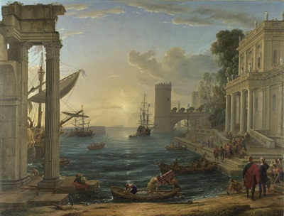
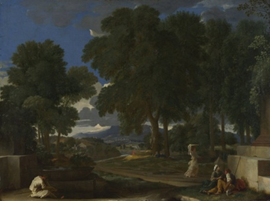
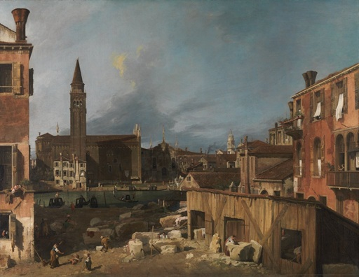
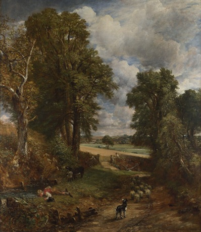
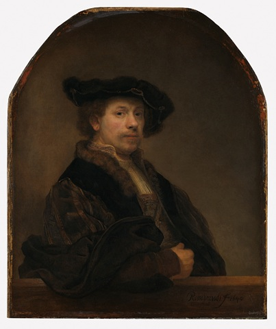
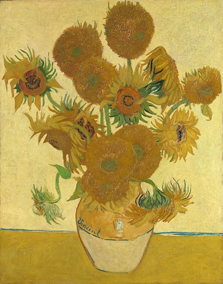
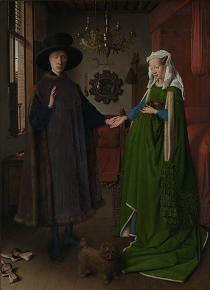

Gallery

Seaport with the Embarkation of the Queen of Sheba, 1648
Claude Gellée
The National Gallery, London

Landscape with a Man washing his feet at a Fountain, 1648
Nicolas Poussin
The National Gallery, London

The Stonemason's Yard, 1725
Giovanni Antonio Canal "Canaletto"
The National Gallery, London

The Cornfield, 1826
John Constable
The National Gallery, London
Landscape with Aeneas at Delos, 1672
Claude Gellée
The National Gallery, London

Self Portrait at the Age of 34, 1640
Rembrandt
The National Gallery, London

Sunflowers, 1888
Vincent van Gogh
The National Gallery, London

Portrait of Giovanni Arnolfini and his Wife, 1434
Jan van Eyck
The National Gallery, London